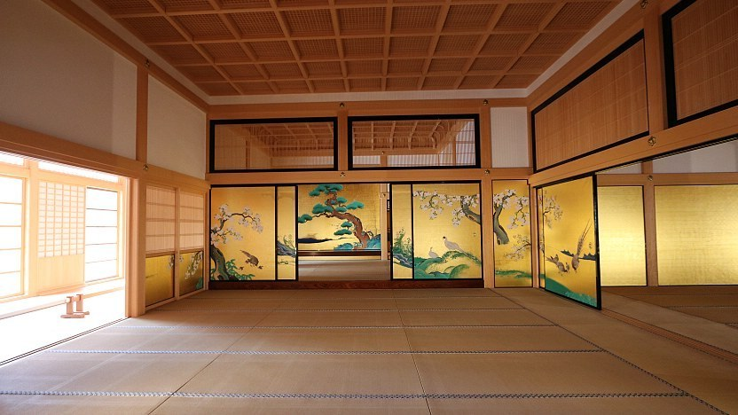

Nagoya Castle
名古屋城
Nagoya Castle (名古屋城, Nagoyajō) was built in the beginning of the Edo Period (1603-1868) as the seat of one of the three branches of the ruling Tokugawa family, the Owari branch. As such, it was one of the largest castles in the country, and the castle town around it ultimately grew to become Japan's fourth largest city.
Most castle buildings were destroyed in the air raids of 1945, including the castle keep and the palace buildings. The current ferro-concrete reconstruction of the castle keep dates from 1959 and - before its closure in May 2018 - contained a museum about the castle's history. The park surrounding the castle keep features two circles of moats and impressive walls with corner turrets. It becomes an attractive hanami spot during the cherry blossom season which usually peaks in late March or early April.

The castle's palace (Honmaru Goten) was recently rebuilt and fully opened to the public in June 2018. Half a century after its destruction in the war, the palace was rebuilt using traditional construction materials and techniques. It contains entrance and reception halls as well as rooms reserved for the visiting shogun with beautiful, replicated paintings on the sliding doors (fusuma). The palace has been considered one of the finest examples of Shoin architecture in all of Japan.
In another ambitious project, the city is planning to reconstruct Nagoya Castle's main keep in wood by 2028. The current, ferro-concrete main keep was closed to the public in May 2018 and is scheduled to be demolished in 2024. Construction on the new, wooden main keep is scheduled to start in 2026 and end in October 2028.
